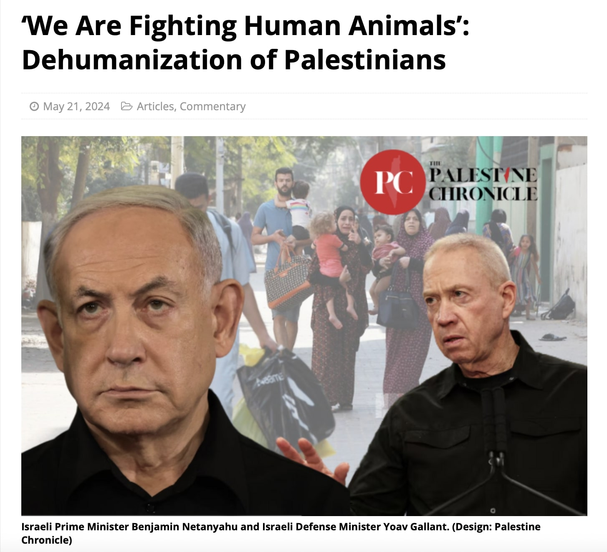

image showing Israeli Prime Minister Benjamin Netanyahu and Israeli Defense Minister Yoav Gallant. Source: The Palestine Chronicle - all rights reserved to the website
I think one of the most blatant misconceptions in Western academic discourses at the moment around the conflict is the insistence on “Israeli exceptionalism”. It is not just the insistence on the “barbarity” of H-m-s or condemning (K!)H-m-s, as an absolute perquisite to engage in any kind of dialogue, but the insistence, that what H-m-s did was the very definition of Evil, with a capital E. There is nothing as evil or gruesome as what H-m-s did and it is the extreme manifestation of all and every wrongdoing any human can think of (which is of course is absurd, because conflicts happen everywhere and one doesn’t need to go very far to see what happened in Syria or Sudan or Libya or even Egypt, in instances of unimaginable violence and horror). So it’s not just that the qualification of H-m-s’ action as evil, it is the exceptional status of the victim. The Israelis are not and cannot be thought of as subjects that can be subjected to such violence. And that begs the question why?
First because they are exceptional. As some of them are descendants of victims (of a similar genocide to what is happening now in Palestine) they believe they are naturally immune from being wrong, from being questioned and of having a moral superiority that is completely unique. No other nation on the planet has that moral claim. And therefore whatever the Israelis think, decide, plan is always already seen as absolutely right, even if it flies in the face of every single law, principle, custom and universal value that post-WWII order was trying to sustain(and that order failed consistently in this region and globally). The paradox of course is that Israel is founded on land usurpation and genocide. Two moral violations that are unjustifiable and deeply anathematic to any post-WWII reality.The second problem is not just that if some moral violation happens to Israel it is the be it all and end all of all moral violations, but it’s also about who did it. And the hysterical insistence on singling out what H-m-s did, was the very fact that Palestinians did it (the killing of all civilians is a tragedy and this is not the first time that Israeli civilians are killed), but because the perpetrators are Palestinians. Those subhuman things, like Israelis think them. The wrongdoing is ten times more offensive, more painful, more “revolting”, because the person committing it is Palestinian. And here lies the problem. What H-m-s did was not in any way exceptionally evil in the history of war or resistance. Not in any way objectively or even philosophically exceptional (again killing civilians is a cowardly act, even against my worst enemy I would never accept it, and it is a horrible tactic). And yet because Israelis NEVER considered H-m-s or the Palestinians in general as their equal, the offense was unthinkable. It is almost a sacrilege.
How could this group of vile beings even come close to “touch” the exceptional, morally superior Israelis? It is not just death, but the insult that the Palestinians think themselves as morally righteous, as powerful, as intelligent, as holders of a true moral calling, like their counterparts. It is an egregious offense that requires immediate and swift annihilation. Not just of people, no, but even the very ground they walk on. The Palestinians must never think themselves as humans or close to being human. They are nothing but abominable, pesky counter-objects (not even subjects) to the idealized Israeli subject. And the moment they demand otherwise, they resist (even if their tactics are morally reprehensible), they have to be “eradicated” with no remorse and in the swiftest, most brutal method possible. That is the true problem. The Palestinians never ceased to believe they are subjects who have a moral claim and right just like their counterparts. No matter how much Netanyahu or any Israeli official scream at the top of their lungs that Palestinians are not human or that they have to be annihilated (in a deeply ironic twist to survivors of an extermination just a few decades ago), or how much they bomb every corner of Palestine they still fail to take that conviction away from the Palestinians. A conviction that confers an endless humanity on the Palestinians, even when the whole Western political order is doing everything it can to take that away from them. #FreePalestine.